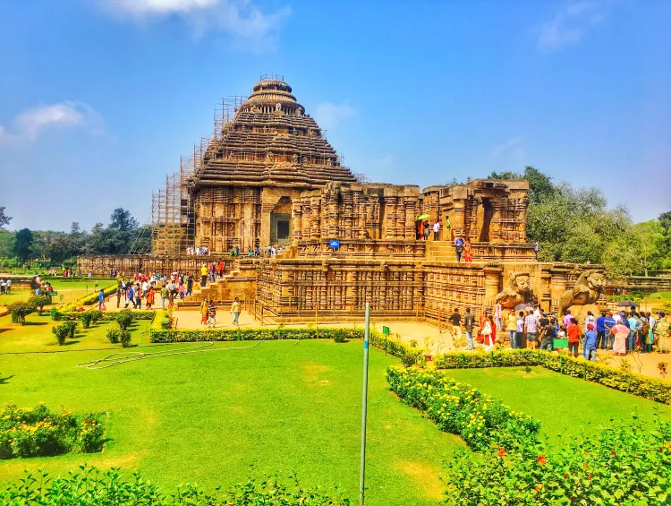
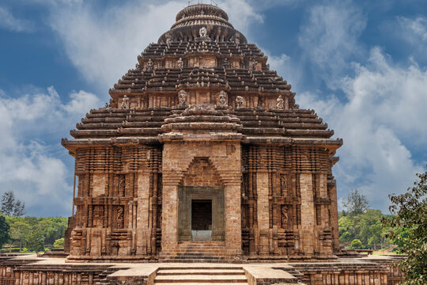

Konark Sun Temple


Konark Sun Temple
Konark Sun Temple is a 13th-century CE Hindu Sun temple at Konark about 35 kilometres (22 mi) northeast from Puri city on the coastline in Puri district, Odisha, India.[1][2] The temple is attributed to king Narasingha Deva I of the Eastern Ganga dynasty about 1250 CE.[3][4] It is the pinnacle of Hindu Orissan architecture.[according to whom?] Dedicated to the Hindu Sun-god Surya, it reflects the pinnacle of kalingan architecture and artistic excellence, what remains of the temple complex has the appearance of a 100-foot (30 m) high chariot with immense wheels and horses, all carved from stone. Once over 200 feet (61 m) high,
Much of the temple is now in ruins, in particular the large shikara tower over the sanctuary; at one time this rose much higher than the mandapa that remains. The structures and elements that have survived are famed for their intricate artwork, iconography, and themes, including erotic kama and mithuna scenes. Also called the Surya Devalaya, it is a classic illustration of the Odisha style of Architecture or Kalinga architecture
The cause of the destruction of the Konark temple is unclear and still remains a source of controversy.[7] Theories range from natural damage to deliberate destruction of the temple in the course of being sacked several times by Muslim armies between the 15th and 17th centuries.[1][7] This temple was called the "Black Pagoda" in European sailor accounts as early as 1676 because it looked like a great tiered tower which appeared black.
Similarly, the Jagannath Temple in Puri was called the "White Pagoda". Both temples served as important landmarks for sailors in the Bay of Bengal.[9][10] The temple that exists today was partially restored by the conservation efforts of British India-era archaeological teams. Declared a UNESCO World Heritage Site in 1984,[1][2] it remains a major pilgrimage site for Hindus, who gather here every year for the Chandrabhaga Mela around the month of February.
Konark Sun Temple is depicted on the reverse side of the Indian currency note of 10 rupees to signify its importance to Indian cultural heritage.
Etymology
The name Konark (Koṇarka) derives from the combination of the Sanskrit words Koṇa (corner or angle) and Arka (the sun).[9] The context of the term Kona is unclear, but probably refers to the southeast location of this temple either within a larger temple complex or in relation to other sun temples on the subcontinent.[12] The Arka refers to the Hindu sun god Surya
Location
The Temple is located in an eponymous village (now NAC Area) about 35 kilometres (22 mi) northeast of Puri and 65 kilometres (40 mi) southeast of Bhubaneswar on the Bay of Bengal coastline in the Indian state of Odisha. The nearest airport is Biju Patnaik Airport in Bhubaneswar, Odisha. Both Puri and Bhubaneswar are major railway hubs connected by Indian Railways
Architectural description
The Konark Sun Temple was built in 1250 CE during the reign of the Eastern Ganga King Narasingha Deva I from stone in the form of a giant ornamented chariot dedicated to the Sun god, Surya. In Hindu Vedic iconography Surya is represented as rising in the east and traveling rapidly across the sky in a chariot drawn by seven horses. He is described typically as a resplendent standing person holding a lotus flower in both his hands, riding the chariot marshaled by the charioteer Aruna.
The seven horses are named after the seven meters of Sanskrit prosody: Gayatri, Brihati, Ushnih, Jagati, Trishtubh, Anushtubh, and Pankti.[14] Typically seen flanking Surya are two females who represent the dawn goddesses, Usha and Pratyusha. The goddesses are shown to be shooting arrows, a symbol of their initiative in challenging the darkness.[15] The architecture is also symbolic, with the chariot's twelve pairs of wheels corresponding to the 12 months of the Hindu calendar, each month paired into two cycles (Shukla and Krishna)
The Konark temple presents this iconography on a grand scale. It has 24 elaborately carved stone wheels which are nearly 12 feet (3.7 m) in diameter and are pulled by a set of seven horses.[5][2][17] When viewed from inland during the dawn and sunrise, the chariot-shaped temple appears to emerge from the depths of the blue sea carrying the sun
The temple plan includes all the traditional elements of a Hindu temple set on a square plan. According to Kapila Vatsyayan, the ground plan, as well the layout of sculptures and reliefs, follow the square and circle geometry, forms found in Odisha temple design texts such as the Silpasarini.[19] This mandala structure informs the plans of other Hindu temples in Odisha and elsewhere.
The main temple at Konark, locally called the deul, no longer exists. It was surrounded by subsidiary shrines containing niches depicting Hindu deities, particularly Surya in many of his aspects. The deul was built on a high terrace.[5] The temple was originally a complex consisting of the main sanctuary, called the rekha deul, or bada deul (lit. big sanctum).[18] In front of it was the bhadra deul (lit. small sanctum), or jagamohana (lit. assembly hall of the people) (called a mandapa in other parts of India.[20]). The attached platform was called the pida deul, which consisted of a square mandapa with a pyramidal roof
All of these structures were square at their core, and each was overlain with the pancharatha plan containing a variegated exterior.[18] The central projection, called the raha, is more pronounced than the side projections, called kanika-paga, a style that aims for an interplay of sunlight and shade and adds to the visual appeal of the structure throughout the day. The design manual for this style is found in the Silpa Sastra of ancient Odisha
Twice as wide as they were high, the walls of the jagamohana are 100 feet (30 m) tall. The surviving structure has three tiers of six pidas each. These diminish incrementally and repeat the lower patterns. The pidas are divided into terraces. On each of these terraces stand statues of musician figures.[5] The main temple and the jagamohana porch consist of four main zones: the platform, the wall, the trunk, and the crowning head called a mastaka.[22] The first three are square while the mastaka is circular. The main temple and the jagamohana differed in size, decorative themes, and design. It was the main temple's trunk, called the gandhi in medieval Hindu architecture texts, that was ruined long ago. The sanctum of the main temple is now without a roof and most of the original parts
On the east side of the main temple is the Nata mandira (lit. dance temple). It stands on a high, intricately carved platform. The relief on the platform is similar in style to that found on the surviving walls of the temple.[5] According to historical texts, there was an Aruna stambha (lit. Aruna's pillar) between the main temple and the Nata mandira, but it is no longer there because it was moved to the Jagannatha at Puri sometime during the troubled history of this temple.[5] According to Harle, the texts suggest that originally the complex was enclosed within a wall 865 feet (264 m) by 540 feet (160 m), with gateways on three sides
The sun temple was made from three types of stone.[23] Chlorite was used for the door lintel and frames as well as some sculptures. Laterite was used for the core of the platform and staircases near the foundation. Khondalite was used for other parts of the temple. According to Mitra, the Khondalite stone weathers faster over time, and this may have contributed to erosion and accelerated the damage when parts of the temples were destroyed.[23] None of these stones occur naturally nearby, and the architects and artisans must have procured and moved the stones from distant sources, probably using the rivers and water channels near the site.[23] The masons then created ashlar, wherein the stones were polished and finished so as to make joints hardly visible.
The original temple had a main sanctum sanctorum (vimana), which is estimated to have been 229 feet (70 m)[17] tall. The main vimana fell in 1837. The main mandapa audience hall (jagamohana), which is about 128 feet (39 m) tall, still stands and is the principal structure in the surviving ruins. Among the structures that have survived to the current day are the dance hall (Nata mandira) and the dining hall (Bhoga mandapa).
Reliefs and sculpture
The walls of the temple from the temple's base through the crowning elements are ornamented with reliefs, many finished to jewelry-quality miniature details. The terraces contain stone statues of male and female musicians holding various musical instruments including the vina, mardala, gini,[24] Other major works of art include sculptures of Hindu deities, apsaras and images from the daily life and culture of the people (artha and dharma scenes), various animals, aquatic creatures, birds, legendary creatures, and friezes narrating the Hindu texts. The carvings include purely decorative geometric patterns and plant motifs.
Some panels show images from the life of the king such as one showing him receiving counsel from a guru, where the artists symbolically portrayed the king as much smaller than the guru, with the king's sword resting on the ground next to him.
The upana (moulding) layer at the bottom of the platform contains friezes of elephants, marching soldiers, musicians, and images depicting the secular life of the people, including hunting scenes, a caravan of domesticated animals, people carrying supplies on their head or with the help of a bullock cart, travelers preparing a meal along the roadside, and festive processions.[26] On other walls are found images depicting the daily life of the elite as well as the common people. For example, girls are shown wringing their wet hair, standing by a tree, looking from a window, playing with pets, putting on makeup while looking into a mirror, playing musical instruments such as the vina, chasing away a monkey who is trying to snatch items, a family taking leave of their elderly grandmother who seems dressed for a pilgrimage, a mother blessing her son, a teacher with students, a yogi during a standing asana, a warrior being greeted with a namaste, a mother with her child, an old woman with a walking stick and a bowl in her hands, comical characters, among others
The Konark temple is also known for its erotic sculptures of maithunas.[28] These show couples in various stages of courtship and intimacy, and in some cases coital themes. Notorious in the colonial era for their uninhibited celebration of sexuality, these images are included with other aspects of human life as well as deities that are typically associated with tantra. This led some to propose that the erotic sculptures are linked to the vama marga (left hand tantra) tradition.[5] However, this is not supported by local literary sources, and these images may be the same kama and mithuna scenes found integrated into the art of many Hindu temples.[5] The erotic sculptures are found on the temple's Shikhara, and these illustrate all the bandhas (mudra forms) described in the Kamasutra.
Other large sculptures were a part of the gateways of the temple complex. These include life-size lions subduing elephants, elephants subduing demons, and horses. A major pillar dedicated to Aruna, called the Aruna Stambha, used to stand in front of the eastern stairs of the porch. This, too, was intricately carved with horizontal friezes and motifs. It now stands in front of the Jagannatha temple at Puri.
Hindu deities
The upper levels and terrace of the Konark Sun temple contain larger and more significant works of art than the lower level. These include images of musicians and historical narratives as well as sculptures of Hindu deities, including Durga in her Mahishasuramardini aspect killing the shape-shifting buffalo demon (Shaktism), Vishnu in his Jagannatha form (Vaishnavism), and Shiva as a (largely damaged) linga (Shaivism). Some of the better-preserved friezes and sculptures were removed and relocated to museums in Europe and major cities of India before 1940.
The Hindu deities are also depicted in other parts of the temple. For example, the medallions of the chariot wheels of the Surya temple, as well as the anuratha artwork of the jagamohana, show Vishnu, Shiva, Gajalakshmi, Parvati, Krishna, Narasimha, and other divinities.[31] Also found on the jagamohana are sculptures of Vedic deities such as Indra, Agni, Kubera, Varuna, and Âdityas
Style
The temple follows the traditional style of Kalinga architecture. It is oriented towards the east so that the first rays of the sunrise strike the main entrance.[2] The temple, built from Khondalite rocks,[33][34] was originally constructed at the mouth of the river Chandrabhaga, but the waterline has receded since then.[citation needed] The wheels of the temple are sundials, which can be used to calculate time accurately to a minute
Other temples and monuments
The Konark Sun Temple complex has ruins of many subsidiary shrines and monuments around the main temple. Some of these include:
Mayadevi Temple
Mayadevi Temple – Located west- been dated to the late 11th century, earlier than the main temple.[36] It consists of a sanctuary, a mandapa and, before it, an open platform. It was discovered during excavations carried out between 1900 and 1910. Early theories assumed that it was dedicated to Surya's wife and thus named the Mayadevi Temple. However, later studies suggested that it was also a Surya temple, albeit an older one that was fused into the complex when the monumental temple was built.[37] This temple also has numerous carvings and a square mandapa is overlain by a sapta-ratha. The sanctum of this Surya temple features a Nataraja. Other deities in the interior include a damaged Surya holding a lotus, along with Agni, Varuna, Vishnu, and Vayu.[38]
Vaishnava Temple, Konârak
Vaishnava Temple – Located southwest of the so-called Mayadevi Temple, it was discovered during excavations in 1956. This discovery was significant because it confirmed that the Konark Sun Temple complex revered all the major Hindu traditions, and was not an exclusive worship place for the saura cult as previously believed. This is a small temple with sculptures of Balarama, Varaha, and Vamana–Trivikrama in its sanctum, marking it as a Vaishnavite temple. These images are shown as wearing dhoti and a lot of jewelry. The sanctum's primary idol is missing, as are images from some niches in the temple.[39] The site's significance as a place of Vaishnavism pilgrimage is attested to in Vaishnava texts. For example, Chaitanya, the early 16th-century scholar and founder of Gaudiya Vaishnavism, visited the Konark temple and prayed on its premises.[40]
Kitchen – This monument is found south of the bhoga mandapa (feeding hall). It, too, was discovered in excavations in the 1950s. It includes means to bring water, cisterns to store water, drains, a cooking floor, depressions in the floor probably for pounding spices or grains, as well several triple ovens (chulahs) for cooking. This structure may have been for festive occasions or a part of a community feeding hall.[41] According to Thomas Donaldson, the kitchen complex may have been added a little later than the original temple.[42]
Well 1 – This monument is located north of the kitchen, towards its eastern flank, was probably built to supply water to the community kitchen and bhoga mandapa. Near the well are a pillared mandapa and five structures, some with semi-circular steps whose role is unclear.[43]
Well 2 – This monument and associated structures are in the front of the northern staircase of the main temple, with foot rests, a washing platform, and a wash water drain system. It was probably designed for the use of pilgrims arriving at the temple.[44]
A collection of fallen sculptures can be viewed at the Konark Archaeological Museum, which is maintained by the Archaeological Survey of India.[45] The fallen upper portion of the temple is believed to have been studded with many inscriptions